地政学
プレトリアは行政首都として大統領府、各省、大使館を集めます。ケープタウンの議会、ブルームフォンテーンの司法首都と役割を分けつつ、ハウテン州の経済圏から国政、外交、抗議の行進、ラジオの世論を受け止めます。
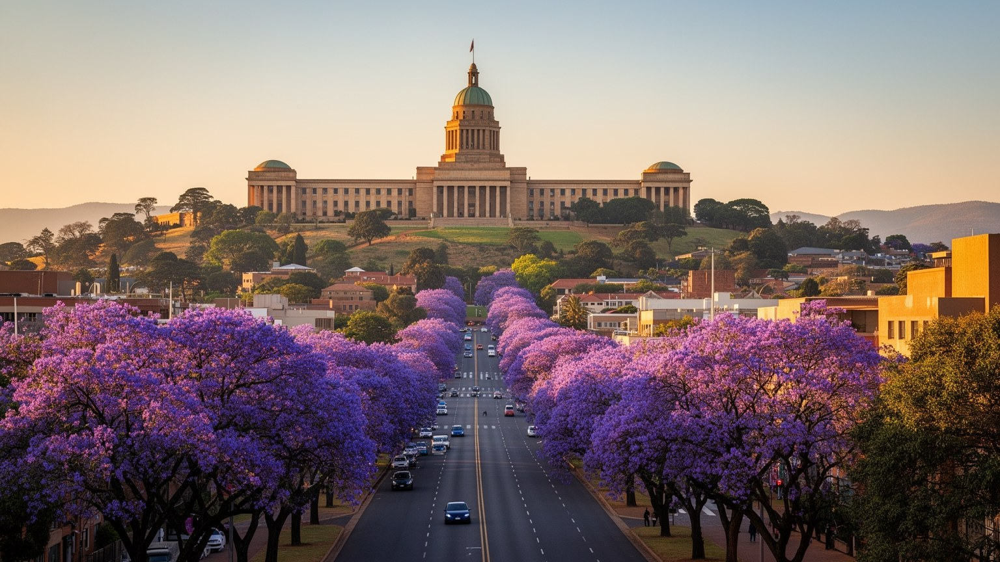
🇿🇦 南アフリカ / ハウテン州 / World City Atlas
ユニオンビルを抱く南アフリカの行政首都です。外交、公務、大学、研究、鉄道、タウンシップ、アパルトヘイトの記憶、ジャカランダの街路、司法と産業が、ハウテン州北部の丘陵に重なります。
都市の骨格
プレトリアは南アフリカの行政首都で、ツワネ都市圏の核でもあります。国家の儀礼、公務、外交、大学、研究機関、軍事施設、郊外住宅とタウンシップが長い谷筋に連なります。
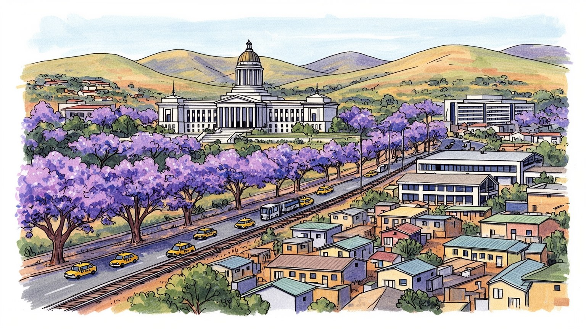
プレトリアは行政首都として大統領府、各省、大使館を集めます。ケープタウンの議会、ブルームフォンテーンの司法首都と役割を分けつつ、ハウテン州の経済圏から国政、外交、抗議の行進、ラジオの世論を受け止めます。
公務、外交、大学、研究機関、自動車、鉄道、軍需、医療、小売、家事労働が雇用を支えます。専門職の街である一方、タウンシップからの長い通勤と若者失業が、都市の豊かさを問い直します。賃金差も見える街です。
アフリカーンスの歴史、黒人解放の記憶、教会、モスク、大学文化、外交社会、音楽、スポーツが重なります。ジャカランダの景観は美しいですが、土地と記憶の非対称も街に残ります。祈りと議論が日常を作る首都です。
訪問者はユニオンビル、フォールトレッカー記念碑、博物館、並木道を巡ります。住民には交通、治安、停電、水、住宅、学校、通勤費が現実で、雷雨の後の匂いとミニバスタクシーの音、店先の光も街の記憶になります。
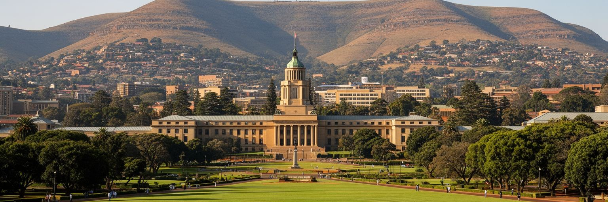
プレトリアは南アフリカの行政首都であり、ユニオンビルはその象徴です。大統領府、中央省庁、大使館、軍事施設、政策研究機関が近い距離にあり、国の方針はこの都市の会議室、官庁、警備された門、外交公邸を通じて形を取ります。南アフリカは議会首都をケープタウン、司法首都をブルームフォンテーンに置くため、首都機能は分散していますが、行政の中心としてのプレトリアの重みは大きいです。政策が決まる場所と、政策の影響を受けるタウンシップや郊外が同じ都市圏にあることも重要です。移民、鉱山、農業、電力、土地改革、教育、外交、安全保障の課題は、遠い国政ではなく、官庁街の渋滞、抗議、雇用、住宅の問題として街に現れます。ユニオンビルの芝生からは整った首都の姿が見えますが、その視界の外には水道、停電、通勤、失業、治安に悩む地域があります。行政首都を読むには、式典や建築の威厳だけでなく、国家が住民へ届く速度と偏りを見なければなりません。プレトリアの政治性は、丘上の建物と谷の生活が互いに近いことにあります。首都は国家の顔であると同時に、国家への不満が集まる場所でもあります。抗議や請願が官庁街へ向かう時、住民は抽象的な国家ではなく、具体的な窓口と警備線に向き合います。ラジオのニュースやSNSの呼びかけが行進を動かすこともあり、首都の政治は広場だけでなく通勤中の会話にも入り込みます。
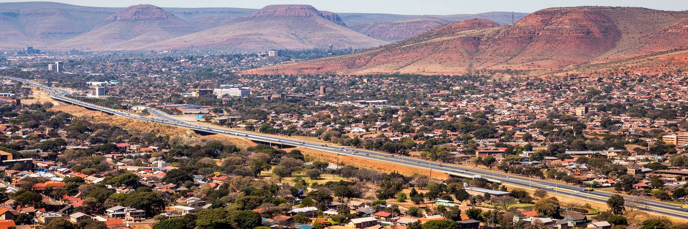
プレトリアは単独の旧市街ではなく、City of Tshwaneという広い都市圏の核です。中心部、ハットフィールド、ブルックリン、センチュリオン、アカシア、マメロディ、ソシャングヴェ、ハマンスクラール、ブロンコーストスプルイトなどが長い距離でつながり、行政首都、大学都市、工業地、農村的な周縁、タウンシップが同じ自治体に入ります。南にはヨハネスブルグ、東にはエクルレニの空港と工業地帯があり、ハウテン州の都市群は一つの巨大な労働市場を作ります。プレトリアの住民は市内だけで完結せず、高速道路、鉄道、ミニバスタクシー、通勤バスで州内を移動します。広い面積は土地利用の余地を与える一方、公共サービスの維持、道路の距離、水と電力の供給、周縁部の貧困対策を難しくします。統計上の一つの都市圏には、外交官が暮らす緑豊かな地区と、長距離通勤を強いられる住宅地が同居しています。ハウテン州の経済力はプレトリアに機会を与えますが、住宅価格、交通費、格差も押し上げます。都市圏を読む時は、中心部の官庁だけでなく、郊外の駅、工業団地、タウンシップの商店、周縁農地まで視野に入れる必要があります。行政区域が大きいほど、市民が同じ自治体に属していても利用できるサービスの質は揃いにくいです。都市圏の一体性は、地図ではなく通勤時間と修理の早さで測られます。
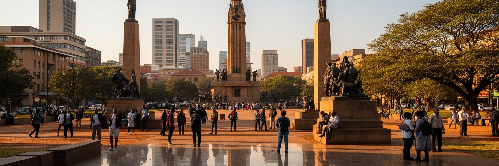
プレトリアの都市空間には、アパルトヘイトと植民地支配の記憶が深く刻まれています。白人政権の行政中枢だった街は、法律、警察、官庁、裁判、住宅分離を通じて人々の移動と生活を制限してきました。ユニオンビルや記念碑は国家の威厳を示す一方、その国家が誰を含み、誰を排除してきたのかを問わせます。民主化後、ネルソン・マンデラ像や新しい記念の場は、旧い権力の景観を別の意味へ開こうとしています。しかし記憶は銅像の追加だけでは解決しません。タウンシップの位置、学校の質、交通の長さ、土地所有、警察への信頼、言語と文化の序列は、過去の制度が現在の生活へ残る形です。フォールトレッカー記念碑のような場所は、アフリカーナーの歴史を語る重要な遺産であると同時に、白人中心の国家物語がどのように作られたかを学ぶ場所でもあります。記憶を単純な善悪の表示に閉じず、誰が歴史を語り、誰の経験が遅れて可視化されたのかを見なければなりません。プレトリアを歩くことは、和解の理念と格差の現実が同じ街路に並ぶことを確認する行為です。都市の歴史は過去ではなく、現在の不平等を説明する地図でもあります。学校の遠足、家族の会話、博物館の展示、抗議の行進は、記憶を毎年更新します。過去を学ぶ態度は、現在の都市を変える責任へつながります。記憶の場を結ぶ交通と説明の言葉も、和解を支える公共インフラです。
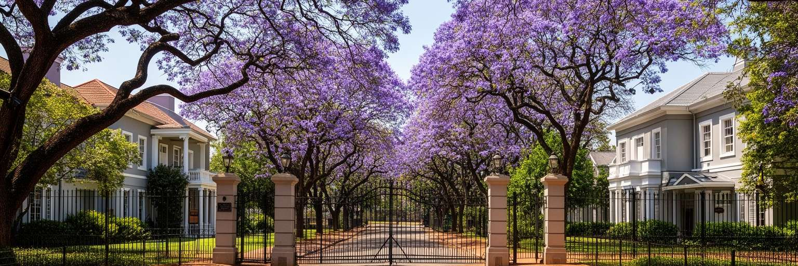
プレトリアは南アフリカの行政首都であるため、多くの大使館、高等弁務官事務所、国際機関の窓口が集まります。緑の多いブルックリンやアルカディア周辺では、邸宅、警備、国旗のある建物、学校、レストランが外交社会の生活を支えます。南アフリカはアフリカ連合、BRICS、南部アフリカ開発共同体、国連、鉱物資源、移民、平和維持をめぐる議論で大きな役割を持ち、プレトリアはその調整の舞台になります。外交は首脳会談だけではありません。ビザ、留学、貿易促進、人権対話、開発援助、難民、企業進出、文化交流の実務が、毎日この街の窓口で処理されます。外交地区の落ち着いた景観は、警備された門の内側と外側の差も見せます。海外から来る専門職や学生が都市の消費を支える一方、近くでは家事労働、警備、清掃、運転の仕事が多く生まれます。国際都市としての顔は、英語だけでなく、アフリカーンス、ズールー語、ツワナ語、北ソト語、フランス語、ポルトガル語などが交わる日常にも表れます。外交の華やかさを読む時は、それを支える地元労働者、住宅市場、交通、安全対策まで合わせて見る必要があります。プレトリアの国際性は、静かな並木道の中に実務として存在しています。周辺国からの学生や移民も、役所、学校、教会、商店で都市を国際化します。外交は大使館の塀だけでなく、近隣の暮らしにも広がります。
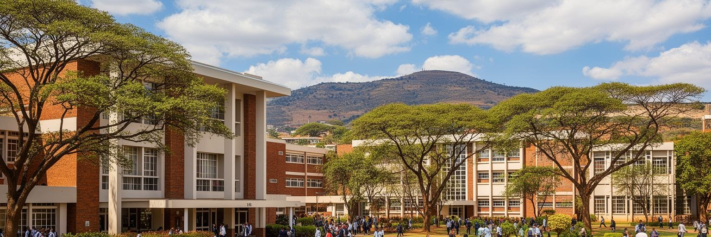
プレトリアは大学と研究機関の都市でもあります。プレトリア大学、南アフリカ大学、Tshwane University of Technology、CSIRなどが、行政首都の近くで人材、政策、技術、医療、法学、工学、農学、社会科学を育てます。学生街のハットフィールドには住居、書店、飲食、交通、夜の活動が集まり、若い人口が都市のリズムを変えます。研究機関は国家政策や産業とも結びつき、水、エネルギー、通信、防衛、鉱物、交通、農業、都市計画の課題に関わります。知識産業は高技能の仕事を生みますが、学費、住宅費、言語、基礎教育の格差によって入口は平等ではありません。遠隔教育を担う南アフリカ大学は、全国の学習者とプレトリアを結び、首都の影響をキャンパスの外へ広げます。大学は自由な議論の場であると同時に、学生運動、学費抗議、雇用不安、歴史的な排除をめぐる対立の場にもなります。研究都市としてのプレトリアを評価するには、論文や研究所の数だけでなく、若者が知識を仕事へつなげられるか、低所得地域の学校から高等教育へ届けるかを見なければなりません。首都機能と知識基盤が重なることは、都市に強さを与えますが、その機会の配分が常に問われます。図書館、寮、奨学金、安い交通、安定した電力は、研究の裏側にある基本条件です。知識の都市は、学ぶための生活費にも支えられています。
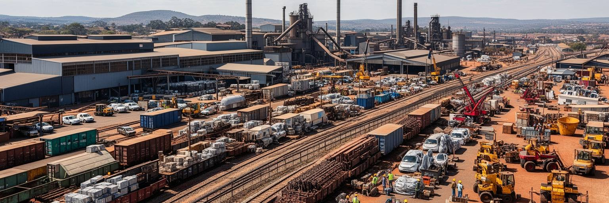
プレトリアは官庁だけの街ではありません。ロスリンの自動車産業、鉄道関連、軍需、防衛、食品、印刷、建設、情報通信、医療、小売、教育が都市圏の雇用を作ります。BMWなどを軸にした自動車産業は輸出、部品供給、技能訓練、工場労働を結び、南アフリカの製造業政策とも関係します。公務員、外交関係者、大学職員、研究者が安定した需要を生む一方、サービス業、家事労働、警備、清掃、運転、露店、ミニバスタクシーの仕事も都市の日常を支えます。問題は雇用の量だけではなく、賃金、通勤時間、労働保護、技能の更新、若者の入口です。タウンシップから工業地や官庁街へ通う人にとって、交通費は実質的な賃金を削ります。停電や水不足は工場にも小商いにも影響し、設備を持つ企業と持たない事業者の差を広げます。産業の高度化が進んでも、教育格差が残れば多くの若者は安定した職に届きにくいです。プレトリアの経済を読むには、GDPや公務員数だけでなく、早朝の通勤、工場の技能、家事労働者の権利、失業者の待つ交差点まで見る必要があります。首都の豊かさは、働く人の移動と時間に支えられています。部品工場の納期、官庁の調達、大学の卒業生、家庭での介護は別々に見えて、同じ労働市場でつながります。スパザショップ、路上の果物売り、携帯決済の小商いも、停電時の街を支えています。労働市場の入口を広げる訓練と交通は、産業政策に直結します。
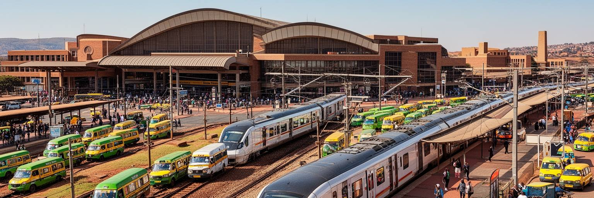
プレトリアの移動は、ガウトレイン、長距離鉄道、ミニバスタクシー、バス、高速道路、自家用車、徒歩が複雑に組み合わさります。ヨハネスブルグやORタンボ国際空港へつながるガウトレインは、専門職や旅行者には速い選択肢ですが、すべての住民に安いわけではありません。多くの労働者はミニバスタクシーと徒歩を使い、タウンシップや郊外から中心部、工業地、大学、商業施設へ向かいます。都市圏が広いため、移動の距離は生活の質を強く左右します。アパルトヘイト期の住宅分離は、現在も「遠くに住み、長く通う」という形で残り、通勤費と時間を低所得世帯へ押しつけます。高速道路は州内の経済を結びますが、車を持たない人には分断線にもなります。鉄道やバスの安全、定時性、駅周辺の歩きやすさ、夜間の移動は、女性、学生、高齢者、障害のある人にとって特に重要です。交通政策を中心部の渋滞緩和だけで考えると、周縁の住民が見えにくくなります。プレトリアの道を読むことは、都市が誰に近く、誰に遠いのかを読むことです。移動の改善は経済政策であると同時に、過去の空間的な不公平を縮める社会政策でもあります。駅前の照明、歩道、乗り換えの待ち時間、運賃の上限は、都市参加の条件になります。速い路線だけでなく、最後の数キロが生活を決めます。通学や通院が安全に続くことも、交通網の大切な成果です。
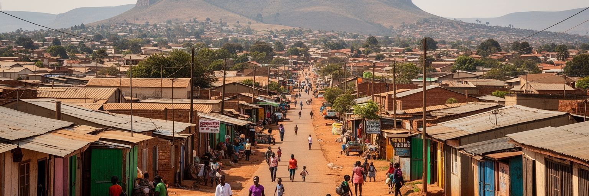
プレトリア都市圏を理解するには、マメロディ、アタリッジビル、ソシャングヴェ、ガランクワ、ハマンスクラールなどのタウンシップと郊外住宅地を中心に置く必要があります。ここには家族、学校、教会、スパザショップ、理髪店、音楽、スポーツ、葬儀、政治議論があり、中心部の官庁街とは別の都市の厚みを作ります。多くの地域は歴史的な人種分離政策によって中心から遠く置かれ、現在も雇用、交通、学校、医療、上下水道、治安の条件に差があります。公営住宅やインフォーマルな住まいは、単に不足を埋める場所ではなく、都市へ参加するための足場です。ですが住宅が仕事から遠ければ、家賃が安くても通勤費と時間が重くなります。若者は地元の小商い、通勤、学習、失業の間で将来を探し、女性は家事、介護、移動、安全を同時に背負うことが多いです。停電や断水が続けば、勉強、商売、医療、食の保存にすぐ影響します。タウンシップを貧困の場所としてだけ描くと、住民の創意、文化、連帯、商いを見落とします。一方で活気だけを強調すれば、構造的な不平等を軽く扱うことになります。プレトリアの住宅問題は、土地、交通、仕事、公共サービス、過去の記憶が結びつく都市の核心です。正式な住所を得ることは、請求書、学校登録、銀行口座、事業許可にも関わります。住まいの安定は、家の壁だけでなく都市への権利を支えます。
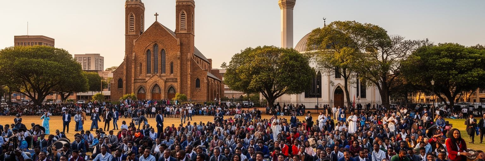
プレトリアの文化は、アフリカーンスの歴史だけでも、行政首都の格式だけでも説明できません。教会、モスク、ヒンドゥー寺院、大学の講義室、タウンシップの音楽、スポーツクラブ、家族の葬儀、路上の食が、複数の言語と信仰を日常の中で結んでいます。アフリカーンスは都市の教育、メディア、記憶に深く残りますが、ツワナ語、北ソト語、ズールー語、英語なども公共空間で聞こえます。宗教施設は礼拝だけでなく、学校、福祉、葬送、就職の相談、移民の支援、地域の安全網として働きます。大学や研究機関は若い文化を生み、詩、演劇、政治討論、音楽、カフェ、学生運動が都市の空気を変えます。ラグビーやサッカーも地域の帰属を作る一方、人種、階級、学校の歴史を映します。ジャカランダの季節は都市の美しい記号ですが、その木々も植民地的な景観管理の歴史と結びつきます。文化を観光的な色彩としてだけ見ると、言語政策、教育格差、礼拝後の助け合い、葬儀費用、若者の表現の場が見えません。プレトリアの日常文化は、静かな並木道とにぎやかなタウンシップ、官庁の形式と家庭の儀礼が同じ都市圏で響き合うところにあります。週末の礼拝、試合、卒業式、葬儀、音楽イベントは、都市の人間関係を組み直す時間です。文化は施設ではなく、毎週の移動と集まりの中にあります。そこで使われる言語の選択も、帰属と距離を静かに示しています。
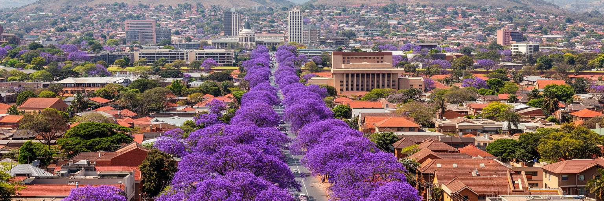
プレトリアは「ジャカランダの街」と呼ばれ、春には紫色の花が街路を覆います。並木は観光写真や市民の記憶に強い印象を残し、大学、官庁街、住宅地、丘陵の風景を柔らかく結びます。しかし都市景観を花の美しさだけで読むことはできません。広い道路、低層の住宅地、官庁の軸線、丘の上の記念碑、タウンシップの密度、郊外のショッピングセンターは、それぞれ異なる時代の都市計画を映しています。ジャカランダは外来樹であり、植民地期と白人郊外の景観にも関わるため、自然な「都市の顔」としてだけ受け止めると歴史の偏りを見落とします。緑の多い地区は日陰、歩行環境、地価、治安の印象を高める一方、周縁部では街路樹、排水、公園、歩道の不足が生活の質を左右します。都市の美しさは、誰の近所に植栽と公共空間があり、誰の通学路に日陰がないのかという公平性の問題でもあります。気候変動で暑さや豪雨が強まれば、樹木は景観ではなく健康と防災のインフラになります。プレトリアの並木道は魅力的ですが、その魅力を都市全体へ広げるには、中心部だけでなくタウンシップや新興住宅地の公共空間を整える必要があります。花の季節は、都市の記憶と格差を同時に見せます。歩道の連続性、街灯、ベンチ、雨水の流れまで整って初めて、景観は日常の快適さになります。美しい通りは、誰でも歩ける通りでなければなりません。
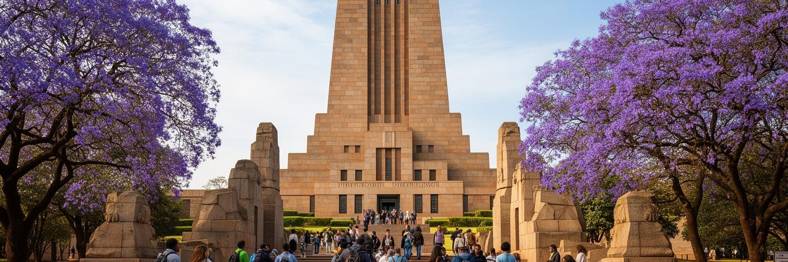
プレトリア観光は、ユニオンビル、フォールトレッカー記念碑、自由公園、国立動物園、博物館、教会広場、ジャカランダの並木、近郊の自然保護区を結んで体験されます。名所は比較的落ち着いた首都の顔を見せますが、それぞれが歴史の問いを抱えています。ユニオンビルは民主化後の国家統合の象徴であり、同時に旧い権力の建築でもあります。フォールトレッカー記念碑はアフリカーナーの記憶を語りますが、その語りが南アフリカ全体の歴史とどう関係するのかを考えさせます。自由公園は解放闘争、戦争、犠牲者を記憶する場所として、別の公共性を示します。観光は単なる写真の点巡りではなく、異なる記憶の施設をどう並べて読むかが重要です。ガイド、運転手、宿泊、飲食、工芸、博物館職員は観光経済を支える一方、中心部の治安、交通、情報の不足は来訪者にも住民にも課題になります。観光客がタウンシップや記憶の場を訪れる時は、貧困や過去を消費する態度を避け、地元の語り手と生活圏を尊重する必要があります。プレトリアの遺産は、美しい建物を保存するだけでなく、対立する記憶を公共の学びへ変える作業です。短い滞在でも、どの記念碑が誰の痛みと誇りを語るのかを考えると、首都観光は国の歴史を読む入口になります。歩く順序も理解を変えます。博物館の展示と街路の現在を結ぶ視線が、旅を深くします。
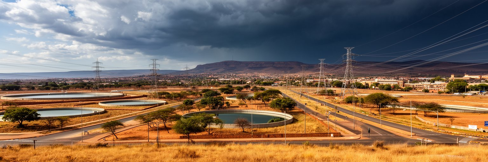
プレトリアは標高の高い内陸にあり、夏は雷雨を伴う雨が多く、冬は乾いて朝晩が冷えます。気候は比較的過ごしやすいですが、水と電力の脆さが都市生活を大きく左右します。広い都市圏へ水道、下水、道路、電力を届けるには長い管路と設備の維持が必要で、老朽化、盗難、停電、財政問題、急な人口増加がサービスの安定を難しくします。南アフリカ全体の負荷制限は、家庭、大学、病院、工場、信号、小商いに影響し、発電機や太陽光設備を持てる層と持てない層の差を広げます。水不足や断水は、家事、学校、医療、飲食店、工業生産をすぐに揺らします。夏の豪雨は道路冠水や排水の問題を起こし、乾いた季節には火災やほこりも増えます。気候変動が暑さと雨の極端さを強めれば、日陰、街路樹、排水、公共施設の涼しさ、災害時の情報伝達がさらに重要になります。インフラの脆さは技術だけでなく、誰の地域で修理が遅れるのか、誰が代替手段を買えるのかという公平性にも関わります。首都の機能を保つには、官庁街だけでなく、タウンシップ、工業地、学校、診療所まで日常の基盤を支える必要があります。停電時には信号、冷蔵庫、通信、宿題、診療機器が止まり、夕方の店先には発電機の音と調理の煙が混じります。雨上がりの土の匂いも、乾いた冬のほこりも生活の感覚です。気候とインフラは別の課題ではなく、毎日の安全を作る一組の条件です。
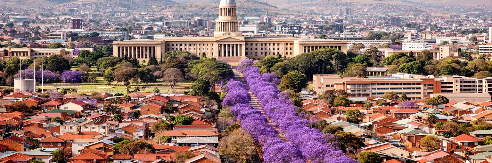
プレトリアを読むことは、南アフリカを一つの首都像に閉じないための作業です。ここにはユニオンビルの国家儀礼、大使館街の国際性、大学と研究所の知識基盤、自動車産業と鉄道の労働、タウンシップの長い通勤、アパルトヘイトの空間的な遺産、ジャカランダの美しい並木、停電と水不足の現実が同時にあります。経済規模や行政機能だけを見れば、プレトリアは強い制度都市に見えます。ですが都市圏の広がりを歩けば、国家の中心に近いことが必ずしも生活の安定を意味しないことが分かります。南アフリカの民主化はこの街の象徴を変えましたが、土地、教育、雇用、交通、安全の不平等は日常の地図に残ります。だからこそ、プレトリアの重要性は、過去と現在の矛盾が見えやすい点にあります。行政首都として国を動かしながら、住民は水、電気、通勤、学校、仕事、治安をめぐって毎日交渉しています。観光の名所、官庁の形式、大学の議論、タウンシップの商いを別々に見るのではなく、同じ都市圏の関係として読むと、プレトリアは南アフリカの制度と社会の距離を測る場所になります。紫の花に包まれた首都は、美しさと不平等、記憶と再編、国家と暮らしを重ねて見せる都市です。ここでは外交官、学生、公務員、工場労働者、露店商、通勤者が同じ道路と電力網を使います。首都の価値は、制度を誇示することではなく、その制度が遠い住宅地の暮らしまで届くかを問い続ける点にあります。